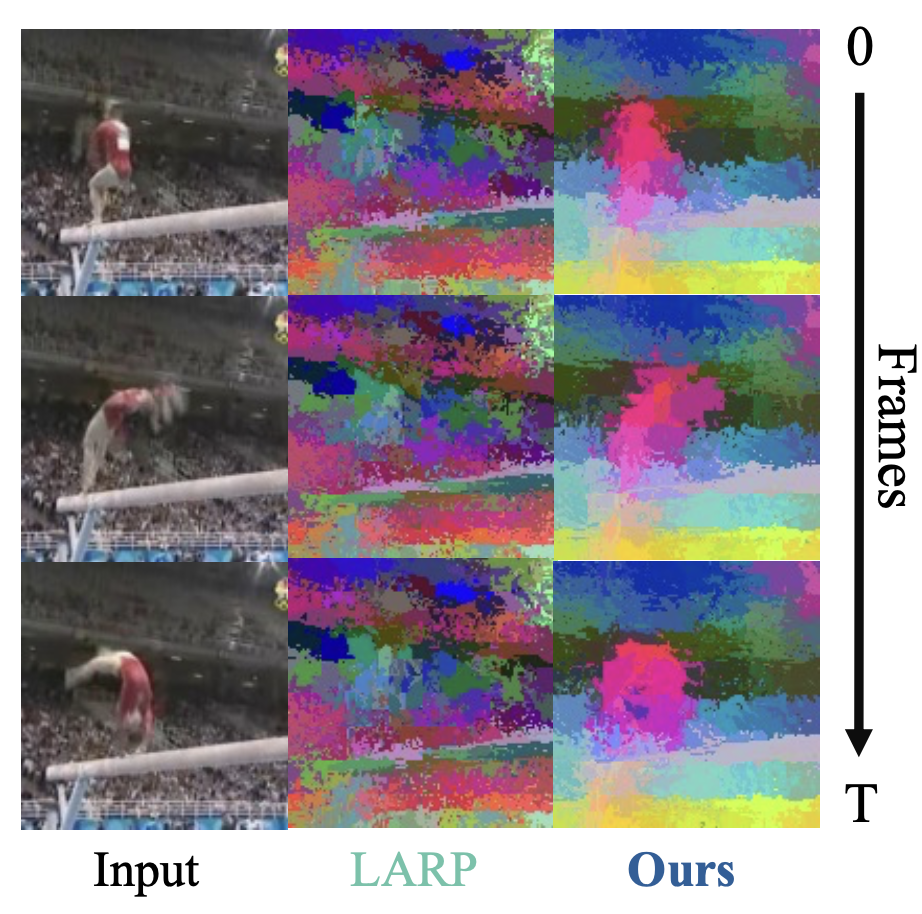
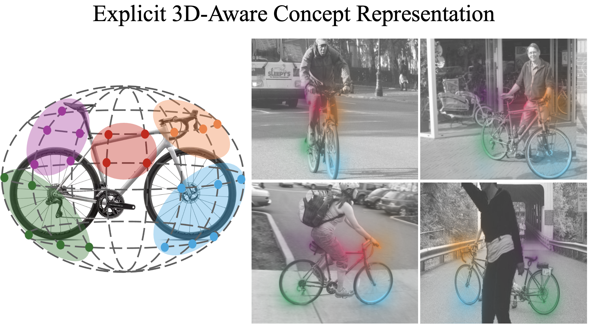
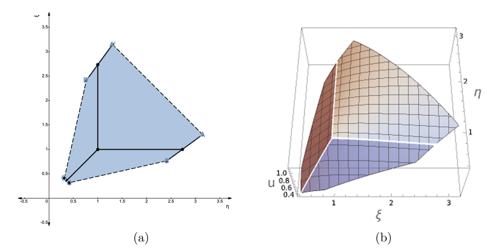

|
Nhi Pham I'm a PhD student at the Max Planck Institute for Informatics in Saarbrücken, Germany, where I am advised by Prof. Bernt Schiele. I also closely collaborate with Dr. Jonas Fischer, Prof. Adam Kortylewski, and Prof. Jan Eric Lenssen. My current primary research area is video generation and embodied world models. Before this, I received my B.S in Computer Science and Mathematics at New York University, where I worked on computational linguistics with Prof. Adam Meyers, and on operator theory with Prof. Ilya Spitkovsky. I also interned at Goldman Sachs, Amazon AWS AI, and Meta (Facebook). Email / CV / Google Scholar / Twitter / Github |

|
News10.2026 Invited talk at FunAI Lab. It was fun! 10.2026 Recognized as a Top Reviewer (Top 8%) at NeurIPS 2026! 09.2026 Our paper TrackTok is accepted at NeurIPS 2026. See you in Sydney! 09.2026 Great turnout at our ECCV 2026 workshop World Models in the Loop - thanks to our speakers and attendees! 05.2026 Our paper CAVE received an oral presentation ✨ at XAI4CV@CVPR 2026! See you in Denver! 04.2026 Our workshop on World Models in the Loop is accepted at ECCV 2026. See you in Malmö! 04.2026 Accepted at ICVSS 2026. See you in Sicily! 01.2026 Our paper CAVE is accepted at ICLR 2026. Check it out! |
Featured ResearchMy current research interest lies in geometric representation learning, with an emphasis on interpretable and robust vision models grounded in 3D structure. I am also interested in extending these ideas to video diffusion models, where learning holistic, geometry-aware tokens can support structured reconstruction and generation over time. In my previous life, I enjoyed playing around with special matrices and their eigenvalues. |
|
?
|
RoboWorM: Evaluating Movement Realism, Consistency and Acceleration Affects
in Embodied Video World Models
Doanh Le Thien*, Viet-Thanh Nguyen*, Pham Tri Quang*, Nhi Pham, Christopher Wewer, …, Jonas Fischer, An Thai Le, Daniel Sonntag, Gim Hee Lee, James Zou, Mathias Niepert, Jan Peters, Duy Minh Ho Nguyen, et al. (*equal contribution) Under submission |
|
?
|
ToMATOS: Tokens Meaningfully Aligned To Object Semantics
Shubham Dokania, Nhi Pham, Philipp Slusallek, Bernt Schiele, Jonas Fischer Under submission |
|
 |
TrackTok: Object-Centric Video Tokenization with Semantically Persistent
Tokens
Nhi Pham*, Christopher Wewer*, Bernt Schiele, Jonas Fischer†, Jan Eric Lenssen† (*equal contribution, †equal senior advisorship) NeurIPS 2026 A tokenization method for object-centric video representation that maintains object clustering across frames and improves video generation in latent space. |
|
 |
Interpretable 3D Neural Object Volumes for Robust Conceptual Reasoning
(CAVE)
Nhi Pham, Artur Jesslen, Bernt Schiele, Adam Kortylewski†, Jonas Fischer† (†equal senior advisorship) ICLR 2026 paper / arXiv / project page / code Interpretable, 3D-consistent object concepts learned from neural object volumes, with robust classification under distribution shift and a new metric for 3D concept consistency. |

|
H-POPE: Hierarchical Polling-based Probing Evaluation of Hallucinations in
Large Vision-Language Models
Nhi Pham*, Michael Schott* Statistical Foundations of LLMs and Foundation Models Workshop, NeurIPS 2024 paper A coarse-to-fine-grained benchmark that systematically assesses hallucination in object existence and attributes. |
|
 |
On 3-by-3 Row Stochastic Matrices
Nhi Pham, Ilya Spitkovsky Special Matrices 2023 paper The known constructive tests for the shapes of the numerical ranges in the 3-by-3 case are further specified when the matrices in question are row stochastic. Auxiliary results on the unitary (ir)reducibility of such matrices are also obtained. |
Talks10.2026 Seeing through Objects and Their Parts: Structured Representations for Robust and Efficient Vision, FunAI Lab 05.2026 Efficient Visual Latent Representation, Computer Vision and Multimodal Learning Un-Workshop, Tübingen AI Center 04.2025 Escaping Plato's Cave: Seeing through Explicit Representation, Generative Intelligence Lab |
Others |
Academic Service |
Top Reviewer: NeurIPS 26 (top 8%)
Reviewer: NeurIPS 26, T-PAMI 26, IJCV 26 |
Graduate Teaching |
Teaching Assistant, Explainable
Machine Learning (ExML) Seminar, Winter 2025/26
Teaching Assistant, High-level Computer Vision, Summer 2025, Summer 2026 Teaching Assistant, Neural Networks: Theory and Implementation, Winter 2024/25 |
|
Source code and design are borrowed from Jon Barron's website. |